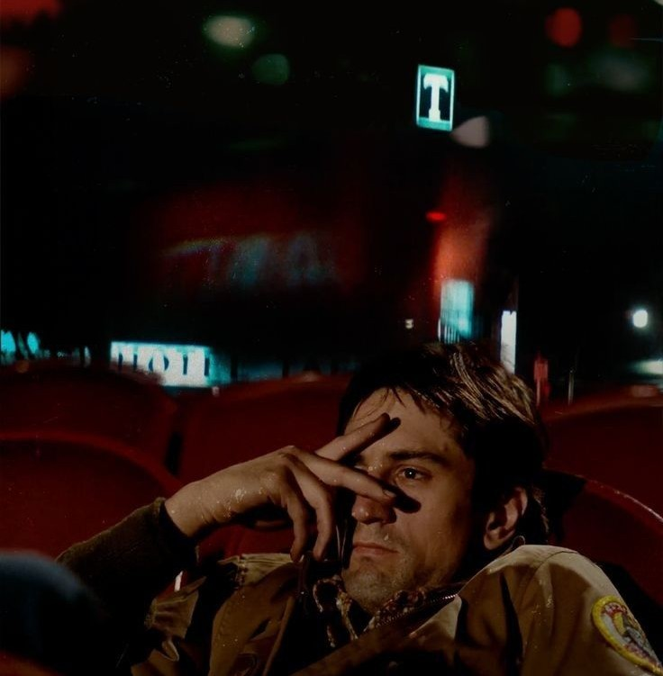
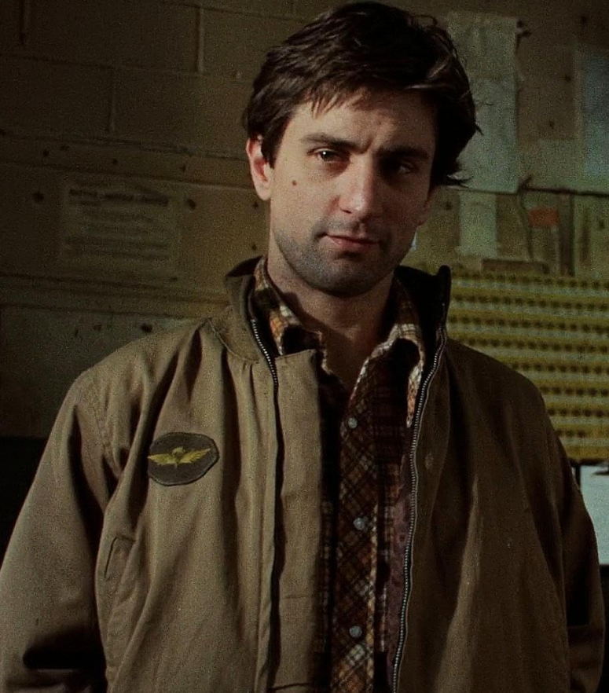
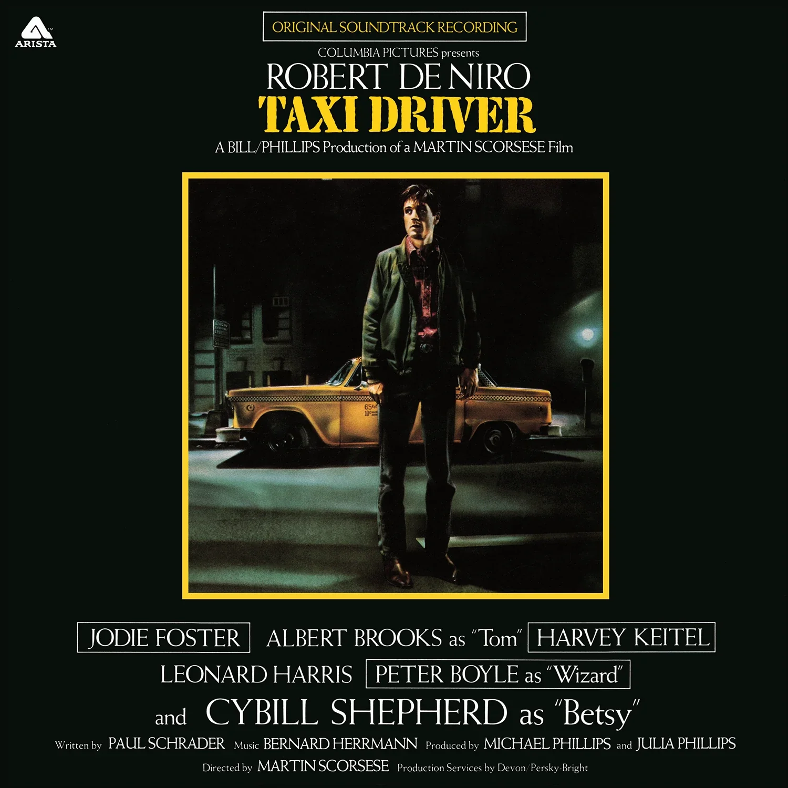

Nueva York, mediados de los años setenta: una ciudad sucia, violenta y vencida por la noche. En ese escenario aparece Travis Bickle, un veterano de la guerra de Vietnam que sufre de insomnio cronico y no encuentra su lugar en el mundo. Para llenar las noches interminables consigue trabajo como taxista nocturno, y desde su parabrisas observa un desfile de prostitutas, delincuentes y almas perdidas que parecen confirmar su idea de que la ciudad esta podrida. Cada calle parece recordarle lo solo que esta.
Es un hombre callado, obsesivo y atrapado en su propia cabeza, que escribe en su diario lo que no se atreve a decir en voz alta, y que ve la corrupcion en cada esquina con la conviccion de que alguien tiene que limpiarla. Su rutina solitaria se altera cuando se cruza con dos mujeres muy distintas, y esos encuentros empiezan a empujarlo en una direccion que ni el mismo entiende del todo. La pelicula sigue ese descenso lento y hipnotico, donde la linea entre la lucidez y la obsesion se desdibuja de a poco.
Dirigida por Martin Scorsese con un guion de Paul Schrader, protagonizada por Robert De Niro en uno de los papeles mas iconicos de la historia del cine y ganadora de la Palma de Oro en Cannes, es un retrato inquietante de la soledad y de lo que puede ocurrir cuando alguien decide dejar de mirar y empezar a actuar.

Banda Sonora Original
1. Main Title (from "Taxi Driver") · Bernard Herrmann
2. Thank God for the Rain · Bernard Herrmann
3. Cleaning the Cab · Bernard Herrmann
4. I Still Can't Sleep / The Cannot Touch Her (Betsy's Theme) · Bernard Herrmann, James P. Nichols
5. Phone Call / I Realize How Much She Is Like the Others / A Strange Customer / Watching Palantine On TV / You're Gonna Die In Hell / Betsy's Theme / Hitting the Girl · Bernard Herrmann, James P. Nichols
6. The .44 Magnum Is a Monster · Bernard Herrmann
7. Getting Into Shape / Listen You Screwheads / Gun Play / Dear Father & Mother / The Card / Soap Opera · Bernard Herrmann, James P. Nichols
8. Sport and Iris · Bernard Herrmann
9. The $20 Bill / Target Practice · Bernard Herrmann, James P. Nichols
10. Assassination Attempt / After the Carnage · Bernard Herrmann, James P. Nichols
11. A Reluctant Hero / Betsy / End Credits · Bernard Herrmann, James P. Nichols
12. Diary of a Taxi Driver · Bernard Herrmann, Robert DeNiro
13. God's Lonely Man - Album Version, With Alternate Ending · Bernard Herrmann
14. Theme from Taxi Driver · Bernard Herrmann, Dave Blume
15. I Work the Whole City · Bernard Herrmann, Dave Blume
16. Betsy In a White Dress · Bernard Herrmann, Dave Blume
17. The Days Do Not End · Bernard Herrmann, Dave Blume
18. Theme from Taxi Driver - Reprise · Bernard Herrmann, Dave Blume